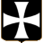

 Der Hospitalorden
Geschichte und Großmeister
Der Hospitalorden wird mit einer vorrangig christlichen Ausrichtung von Bruder Gerhard mithilfe einiger Kaufleute aus Amalfi in der Mitte des XI. Jhdts. gegründet.
Ursprung und Organisation
Ursprüngliche Aufgabe der Hospitalritter oder Hospitaliter vom "Orden vom Spital des heiligen Johannes zu Jerusalem" ist der Schutz eines vor dem ersten Kreuzzug in Jerusalem errichteten Spitals. Der Orden wird nach der Einrichtung des lateinischen Königreichs Jerusalem gegründet und 1113 von Papst Paschalis II., dann erneut 1153 von Papst Eugenius III. bestätigt. Die Brüder legen das Gelübde der Armut, des Gehorsams und der Keuschheit ab und schwören, bei der Verteidigung Jerusalems mitzuwirken. Gerhard, der erste Meister, wird Rektor genannt; später nehmen die Leiter des Ordens den Titel eines Großmeisters an. Aus Notwendigkeit übernimmt der Orden eine militärische Ausrichtung, die bewaffneten Ritter sind adliger Herkunft. Der Orden umfasst drei Kategorien von Mitgliedern: die Ritter, die Waffenträger und die dienenden Brüder. Unter den Rittern findet man die Justizritter (einen Titel, der vollblutadligen Rittern durch Vorlage von mindestens 16 Adelstiteln überreicht wird) und Ehrenritter (ein Titel, den Nicht-Vollblütige durch besondere Verdienste erringen). Die Waffenträger oder Knappen sind sowohl mit Kriegs- als auch mit Pflegediensten betraut. Die dienenden Brüder sind die Priester des Ordens, ihre Gemeinschaft untersteht der Regel der Hl. Augustin. Der Orden, der sich zunächst dem Schutz der Pilger und Kreuzfahrer widmet, verlässt mit dem Ende der Kreuzfahrerstaaten das Heilige Land.
Die Ritter von Rhodos
Nach 1309 richtet der Orden seinen Hauptsitz auf der Insel Rhodos ein. Der Orden bildet dort einen Territorialstaat und schützt mit seinen Schiffen den östlichen Mittelmeerraum vor den Muslimen. 1312 gehen die Besitztümer der Tempelritter auf den Hospitalorden über. Die verschiedenen Abteilungen des Ordens in anderen Ländern werden als "Zungen" bezeichnet. Als der osmanische Herrscher Süleiman I., der Prächtige, im Jahr 1522 Rhodos erobert, muss der Orden die Insel verlassen. Erst 1530 finden die Ritter ein neues Hauptquartier auf der ihnen überlassenen Insel Malta.
Die Ritter von Malta
Als Herren der Insel übernehmen die Malteserritter (der Name, den der Orden zu diesem Zeitpunkt annimmt) die Verteidigung der Insel gegen die Invasion der osmanischen Flotte im Jahr 1565. Bis ins XIX. Jhdt. spielt der Orden in der europäischen Geschichte eine bedeutende Rolle. Während der Reformation verlieren die Malteser ihre englischen und deutschen, während der Französischen Revolution ihre französischen Besitzungen. Die Russen bieten sich als Schutzmacht an, dennoch gelingt es Napoleon, die Insel einzunehmen. 1798 wird der Konvent nach Triest verlegt, 1834 siedelt er nach Rom über. Zu diesem Zeitpunkt haben die Russen bereits die gesamten Güter der Ritter innerhalb ihrer Territorien beschlagnahmt.
In Anlehnung an ihre Bestätigung im Jahr 1961 durch Papst Johannes XXIII. bilden die Malteser eine religiöse Gemeinschaft und einen Ritterorden. Sie sind in fünf große Priorate sowie in zahlreiche nationale Verbände unterteilt, die diplomatische Beziehungen zum Vatikan und verschiedenen Ländern pflegen. Als religiöse Gemeinschaft unterhalten sie Krankenhäuser, Unfallambulanzen sowie Versorgungseinrichtungen für Kriegsopfer und Flüchtlinge. Sie tragen einen weiten, schwarzen Mantel, auf dem ein Malteserkreuz angebracht ist. Der Großmeister trägt den Titel Eminenz und nimmt einen kirchlichen Rang eines Kardinals ein.
Großmeister des Hospitalordens, im Amt zur Zeit der Templer
- Raymond du Puy, Großmeister von 1120 bis 1160
- Oger de Balben, Großmeister von 1160 bis 1162
- Arnould de Comps, Großmeister von 1162 bis 1163
- Gilbert d'Assailly, Großmeister von 1163 bis 1170
- Gaston de Murols, Großmeister von 1170 bis 1172
- Gerard Jobert, Großmeister von 1172 bis 1177
- Roger des Moulins, Großmeister von 1177 bis 1187
- Armengaud d'Aspe, Großmeister von 1188 bis 1190
- Warner de Milly de Naplouse, Großmeister von 1190 bis 1192
- Geoffrey de Donjon, Großmeister von 1193 bis 1202
- Alphonse du Portugal, Großmeister von 1203 bis 1206
- Geoffrey le Rat, Großmeister von 1206 bis 1207
- Garin de Montaigu, Großmeister von 1207 bis 1227
- Bertrand de Thessy, Großmeister von 1230 bis 1231
- Guerin de Montacute, Großmeister von 1231 bis 1236
- Bertrand de Comps, Großmeister von 1236 bis 1239
- Pierre de Vieille-Bride, Großmeister von 1239 bis 1241
- Guillaume de Châteuneuf, Großmeister von 1241 bis 1258
- Hugues de Revel, Großmeister von 1258 bis 1277
- Nicolas Lorgne, Großmeister von 1277 bis 1283
- Jean de Villiers, Großmeister von 1285 bis 1293
- Odon des Pins, Großmeister von 1294 bis 1296
- Guillaume de Villaret, Großmeister von 1296 bis 1304
- Foulques de Villaret, Großmeister von 1305 bis 1319
- Helion de Villeneuve, Großmeister von 1319 bis 1346
- Dieudonné de Gozon, Großmeister von 1346 bis 1353